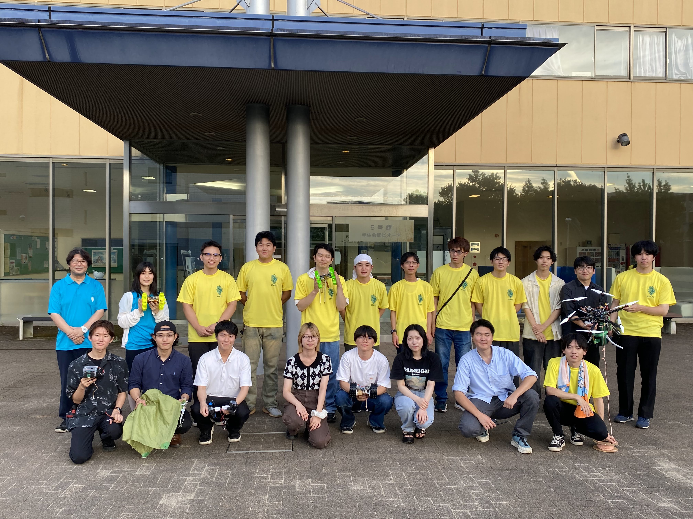
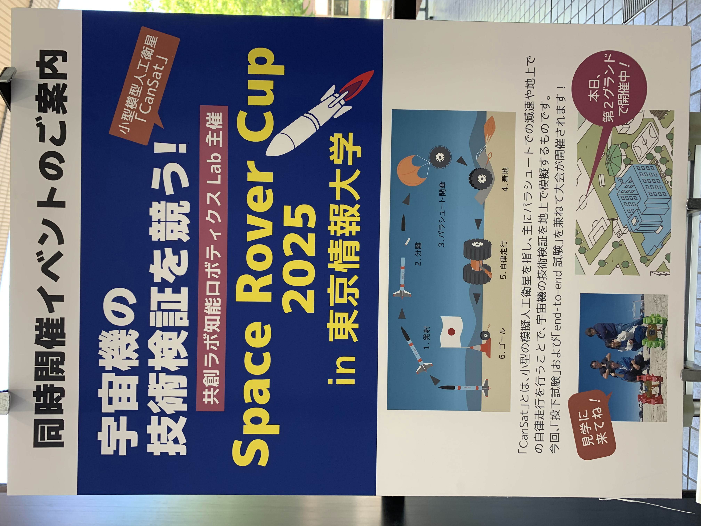
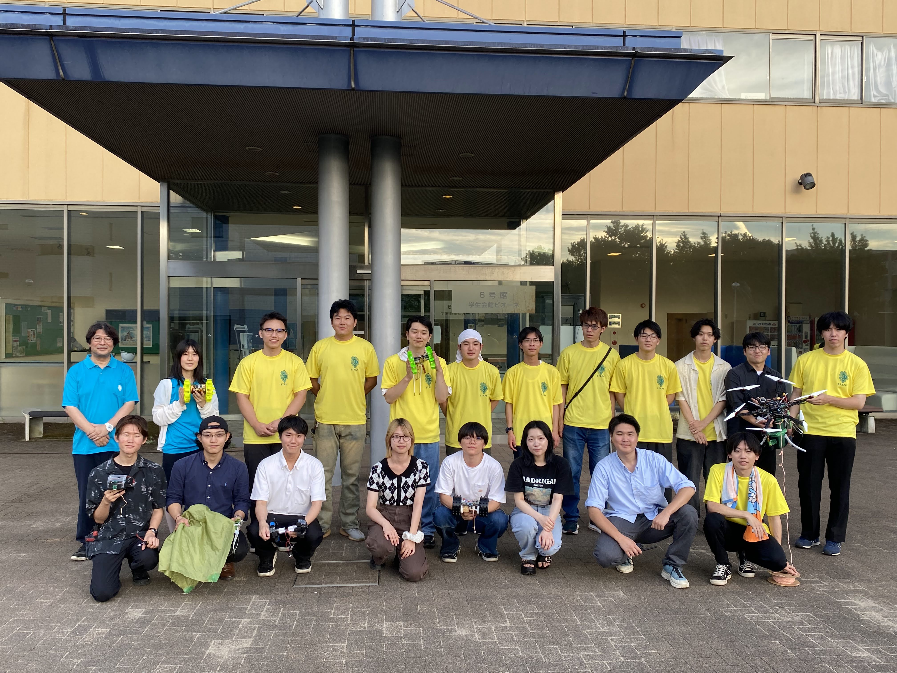
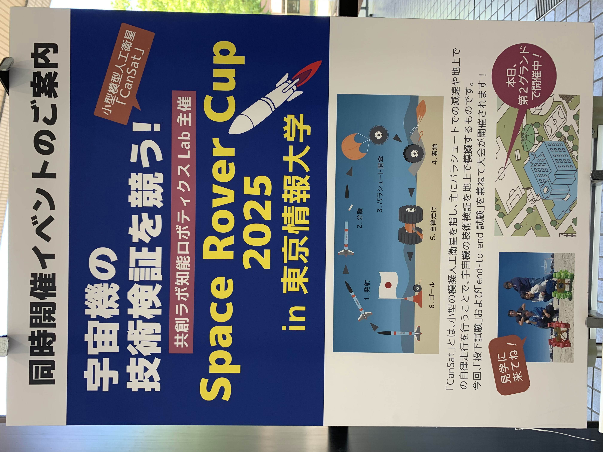

Aout seminar
本ゼミでは、CanSat活動の中で組み込みソフトウェアに対する理解を深めており、最近では鳥取ローバーチャレンジでの経験から従来の2輪のローバーだけでなく 4輪ローバーの開発も進めています。また、CanSat大会では地面を走るランバック部門のローバーでの参加をしていますが、ゼミ生の中にはドローン班によるフライバック 部門の参加を目指しているメンバーも活動しています。
フライバック
Comming soon..

Records
Space Rover Cup 2025 in 東京情報大学という大会を主催しました。 芝浦工業大学と日本大学のチームとドローンを使用して投下試験を行いました！
 



鳥取ローバーチャレンジで「SuperNOVAチーム」が初代王者になりました！
種子島ロケットコンテスト2025にて斎藤ゼミの3チームが快挙達成しました！
情報大学で毎年開催される翔風祭イベントにおいて、模擬店の出店を行いました。 3Dプリンタで作ったミニCANSATを販売しました。
アメリカのネバダ州ブラックロックにて、CanSatのRunbackの種目に出場しました。 ...柴田write 9月8日から13日まで行い。。。。